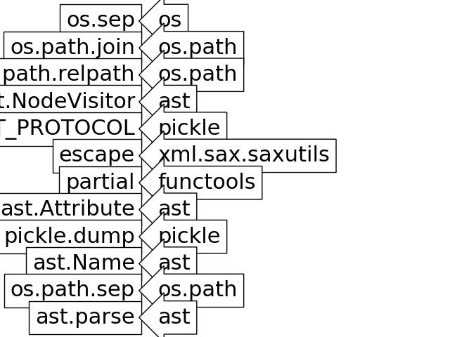

Identifying function names in a script¶
Calls Sphinx-Gallery identify names function to figure out which functions are called in the script and to which module do they belong.
# Code source: Óscar Nájera
# License: BSD 3 clause
import matplotlib.pyplot as plt
import sphinx_gallery.backreferences as spback
filename = spback.__file__.replace('.pyc', '.py')
file_code = open(filename, 'r').read()
names = spback.identify_names(file_code)
figheight = len(names) + .5
fontsize = 22
fig = plt.figure()
for i, (name, obj) in enumerate(names.items()):
fig.text(0.3, (float(len(names)) - 0.5 - i) / figheight,
name,
ha="right",
size=fontsize,
transform=fig.transFigure,
bbox=dict(boxstyle='square', fc="w", ec="k"))
fig.text(0.35, (float(len(names)) - 0.5 - i) / figheight,
obj["module"],
ha="left",
size=fontsize,
transform=fig.transFigure,
bbox=dict(boxstyle='larrow', fc="w", ec="k"))
#
plt.draw()
plt.show()
Total running time of the script: ( 0 minutes 0.096 seconds)